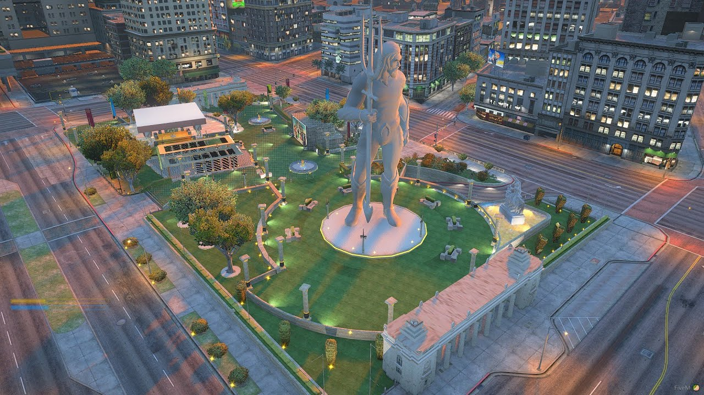
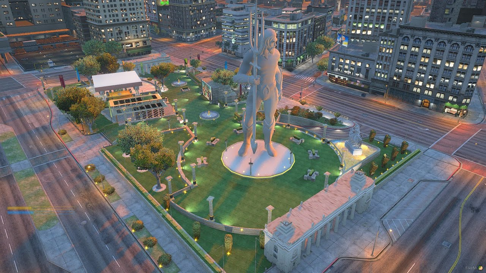
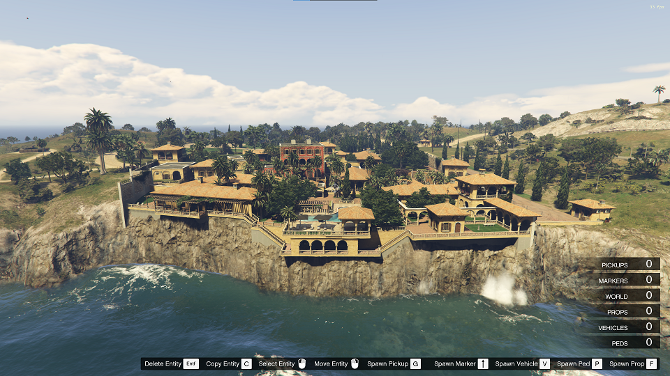
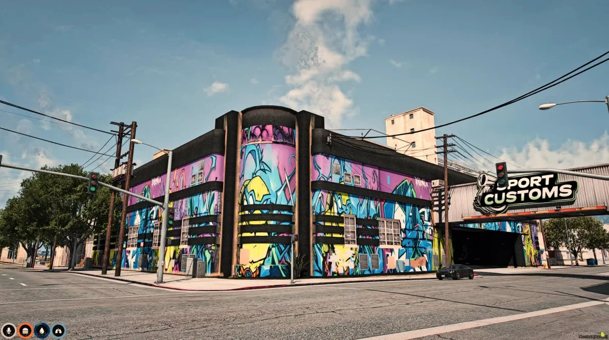
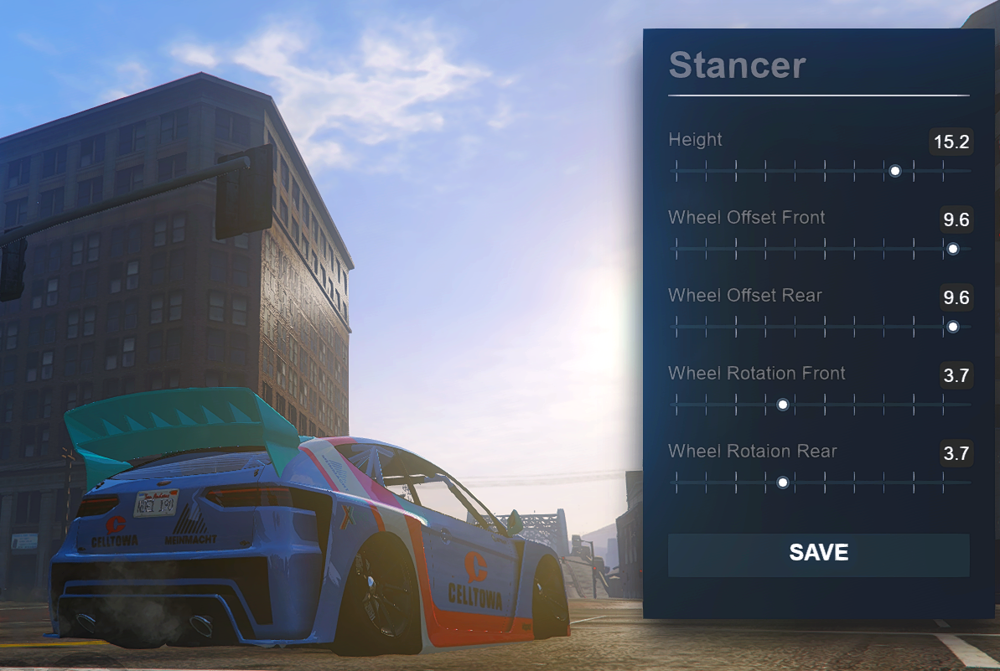
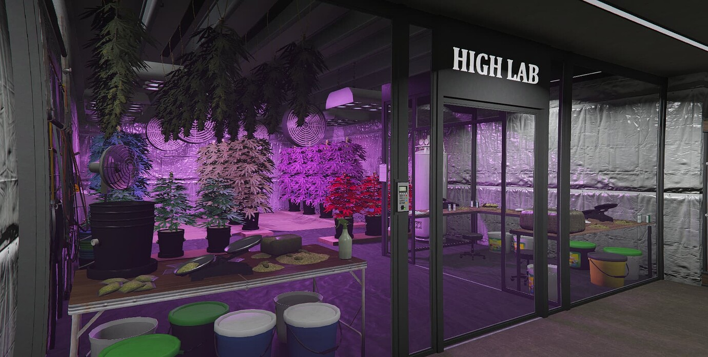

Roman Park
Legion square MLO fully optimize
View ProjectDetail-oriented and tech-savvy aspiring Content Moderator with a Bachelor of Science in Information Technology (BSIT) background. Adept at identifying, reviewing, and filtering online content to ensure compliance with community guidelines. Strong analytical and problem-solving skills with the ability to work independently in a remote setup. Passionate about maintaining a safe and positive online environment.
Roman ParkLegion square MLO fully optimize View Project |
Cayo Perico MansionFull MLO GTA V Cayo perico Mansion View Project |
Mecahinc Sport CustomsMLO & Mechanic Function fully optimize View Project |
Animated Car.jpg)
44+ animated FiveM cars fully optimize with different unique features View Project |
Hunting Script.jpg)
Take your FiveM server to the next level with this fully optimized and lightweight hunting system, compatible with both QBCore and ESX! View Project |
Fivem VstancerEnhance your FiveM server with VStancer, a fully optimized and lightweight script that lets players fine-tune their vehicle stance. View Project |
JDM Wheels FiveM.jpg)
FiveM server with a high-quality JDM Wheels Pack, featuring authentic, detailed, and optimized rims for the best stance and drift builds. View Project |
FiveM ready Graphics pack.jpg)
Looking for a FiveM graphics mod that improves visuals without lagging your game? This Low-End Friendly Graphics Pack is designed to provide better textures, lighting, and color correction while keeping performance smooth View Project |
Fully Optimized Drug Script | QBCore & ESXBring a realistic and interactive mushroom farming system to your FiveM server! MZ Shrooms allows players to harvest, process, and sell magic mushrooms, adding a unique and immersive activity to roleplay servers. View Project |